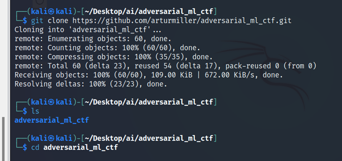
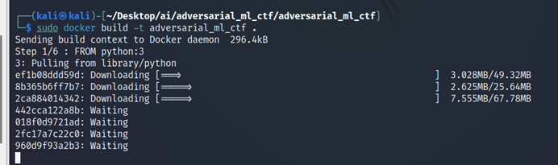
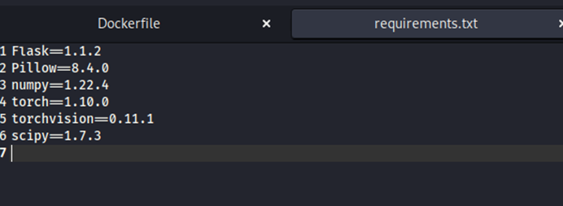
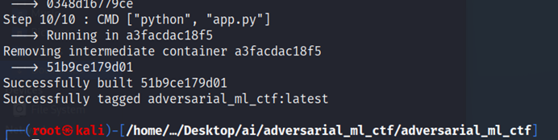
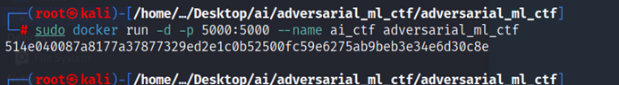
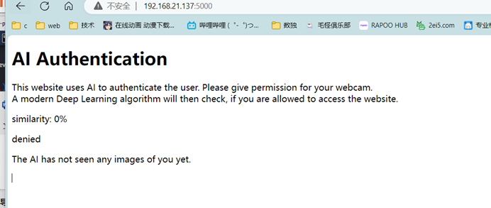

adversarial_ml_ctf 是一个 CTF 挑战，展示了大多数常见人工神经网络对对抗图像存在安全漏洞。
GitHub 仓库：https://github.com/arturmiller/adversarial_ml_ctf
直接拉取 Docker 镜像
最简单的方式是直接拉取已构建好的镜像：
bash
docker pull arturmiller/adversarial_ml_ctf源码构建
也可以通过克隆仓库自行构建：
bash
git clone https://github.com/arturmiller/adversarial_ml_ctf.git
bash
sudo docker build -t adversarial_ml_ctf .
解决 Python 版本问题
安装时会报错，这是由于 python3 太新导致的，需要将 Dockerfile 中的基础镜像改为 python:3.8-slim。
Dockerfile
修改后的 Dockerfile 内容如下：
Dockerfile
FROM python:3.8-slim
WORKDIR /app
# 先在线安装所有依赖（锁死版本）
RUN pip install --no-cache-dir --trusted-host mirrors.aliyun.com -i http://mirrors.aliyun.com/pypi/simple/ \
Flask==1.1.2 \
Jinja2==2.11.3 \
MarkupSafe==1.1.1 \
itsdangerous==1.1.0 \
Werkzeug==1.0.1 \
Pillow==8.4.0 \
numpy==1.22.4 \
scipy==1.7.3 \
typing-extensions
# 离线装 torch
COPY ./torch-1.10.0-cp38-cp38-manylinux1_x86_64.whl /app/
RUN pip install --no-cache-dir --no-index --find-links=/app/ torch==1.10.0
# 在线装 torchvision
RUN pip install --no-cache-dir --trusted-host mirrors.aliyun.com -i http://mirrors.aliyun.com/pypi/simple/ torchvision==0.11.1
# 复制应用代码
COPY . /app
RUN mkdir -p /app/uploads
EXPOSE 5000
CMD ["python", "main.py"]注意需要提前下载 torch-1.10.0-cp38-cp38-manylinux1_x86_64.whl 放到项目目录中。

安装过程需要很长时间，请耐心等待：


搭建完成：
